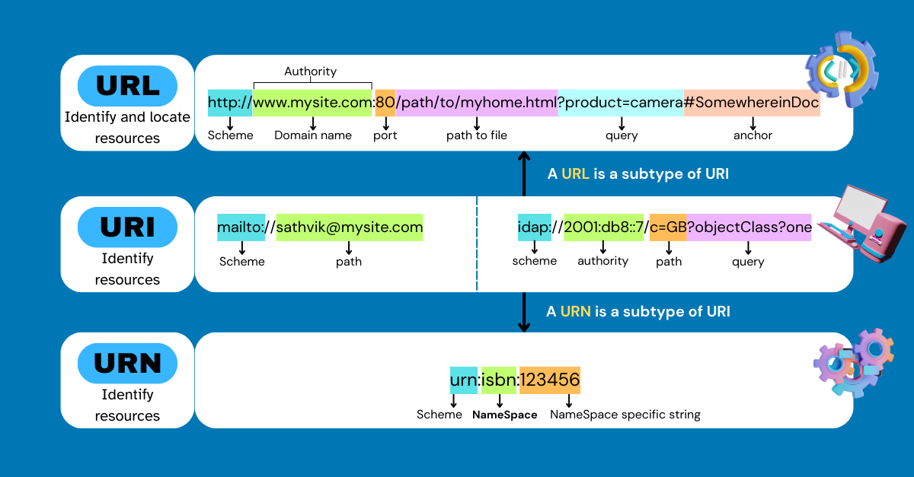

Uniform Resource Name (URN)
Category: Navigation & Standards
Definition
A URN is a type of URI that uses a specific "namespace" to identify a resource by name in a persistent and location-independent manner. Unlike a URL, a URN does not tell you where the resource is or how to get it; it simply tells you what it is.
Key Characteristics
- Persistence: Even if a document is moved from one server to another, its URN remains the same.
- Location Independence: It identifies the "item" itself, not the "path" to the item.
- Structure: A URN always starts with the prefix
urn:followed by a namespace identifier.
Visual Comparison: Name vs. Address
To differentiate between the two types of URIs, think of a book:

- URN: The book's ISBN (e.g.,
urn:isbn:9780134034287). This name never changes, no matter where the book is. - URL: The specific shelf location in a specific library. If the library moves the book, the URL changes, but the URN stays the same.
Real-World Examples
Common namespaces for URNs include:
urn:ietf:rfc:2648— Identifying a specific technical document (Request for Comments).urn:uuid:6e8bc430-9c3a-11d9-9669-0800200c9a66— A Universally Unique Identifier for software components.